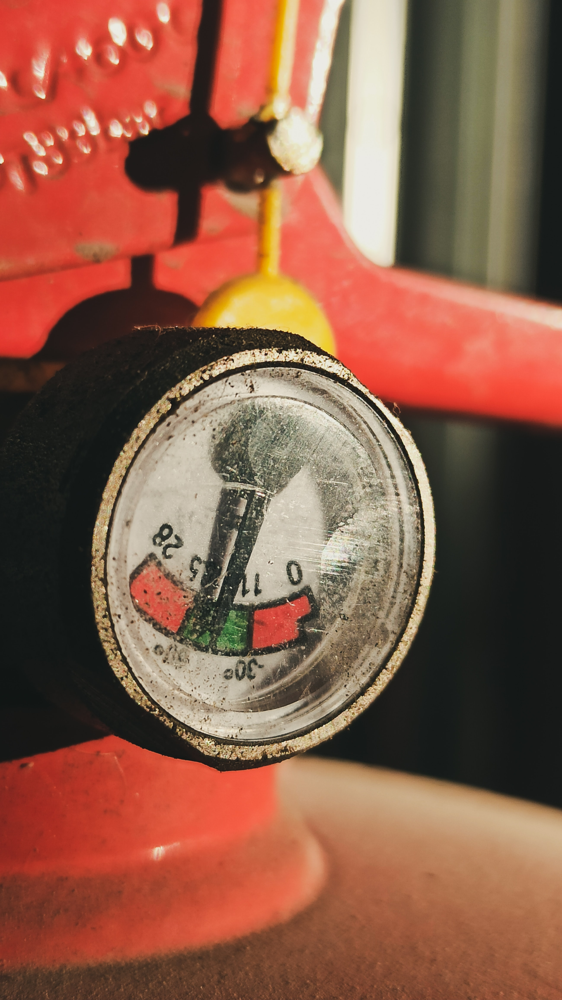
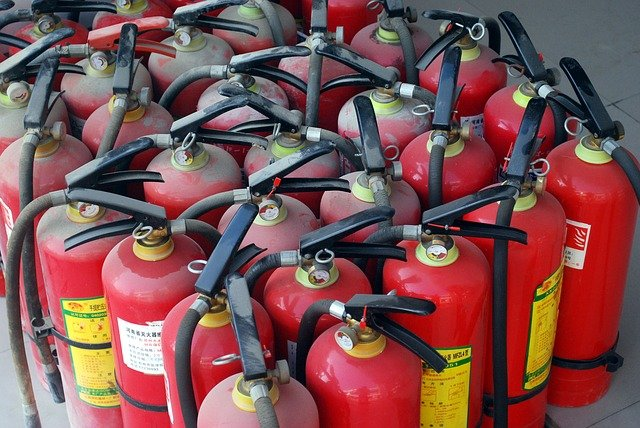

RECARGA DE EXTINTORES Realizamos la recarga de todo tipo de extintores.Los extintores son totalmente desarmados y cada pieza revisada e inspeccionada. Se efectúa la reparación de válvulas, cambios de asiento de teflón, cambio de gomas, retenes y tomas de fondo, preservación exterior (pintura) de aquellos equipos que no se ajusten a las normas reglamentarias. Los equipos se retiran en su totalidad, debido a que se les facilitará en préstamo los equipos necesarios, siendo devueltos en condiciones de uso en las 48 horas siguientes. A los extintores se le colocarán etiquetas autoadhesivas indelebles. 
MANTENIMIENTO DE EXTINTORES El manteniemiento anual de un extinguidor garantiza que este en buen estado de funcionamiento cuando es necesario apagar un incendio. Consiste en una revisión completa, desarme del extinguidor, cambio de piezas menores y el reciclaje del polvo químico posterior a su tratamiento. 